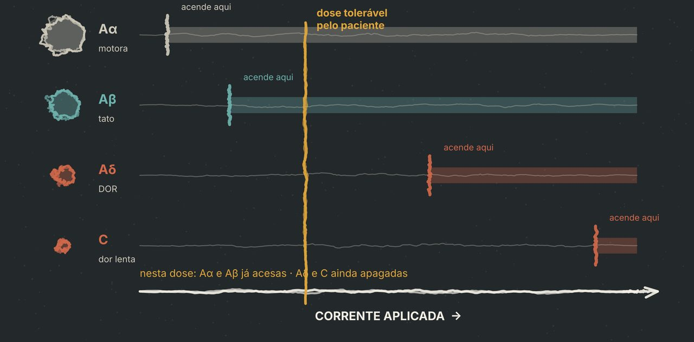
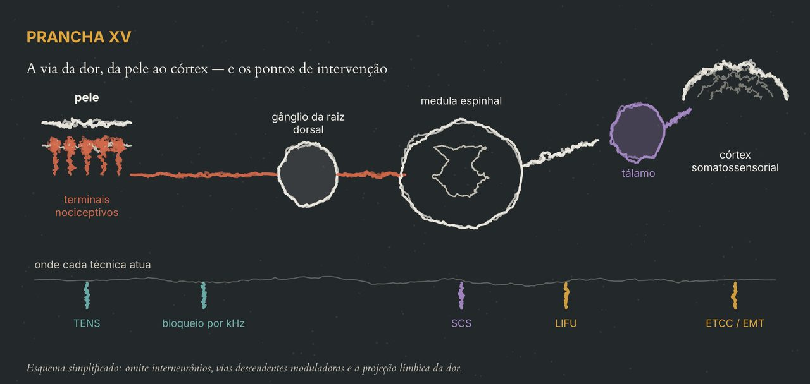
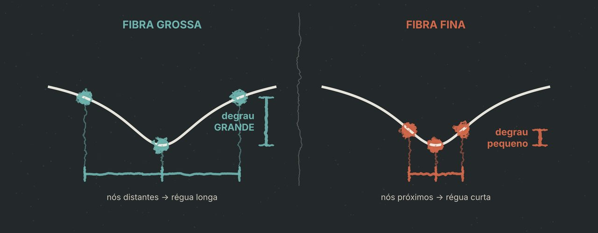
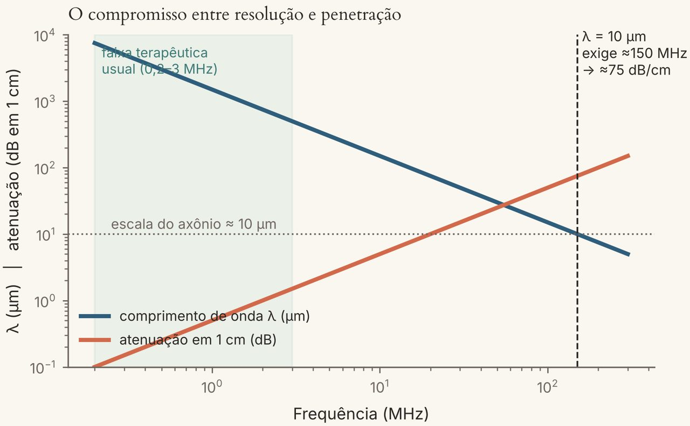
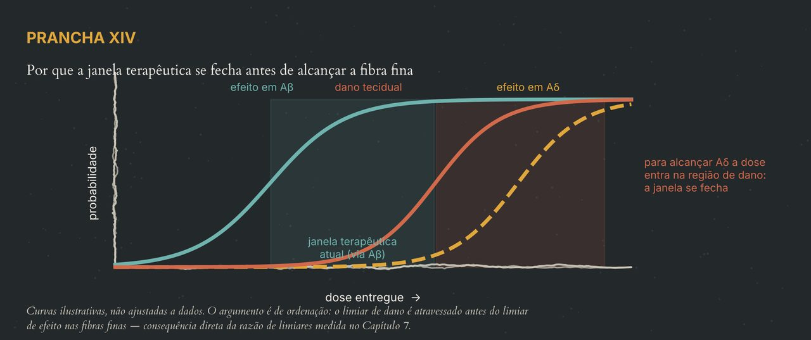
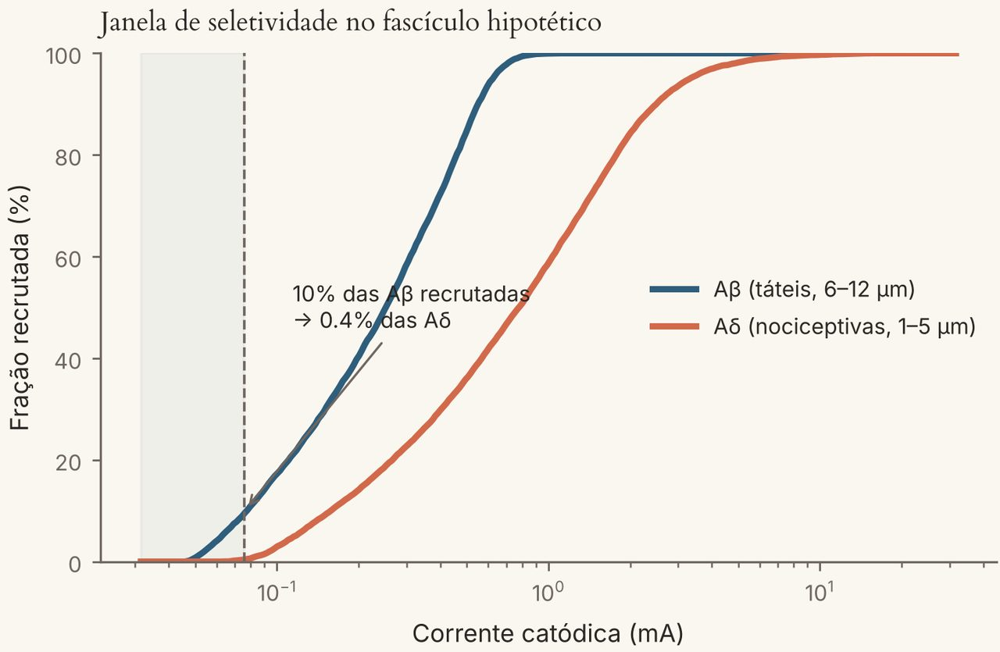
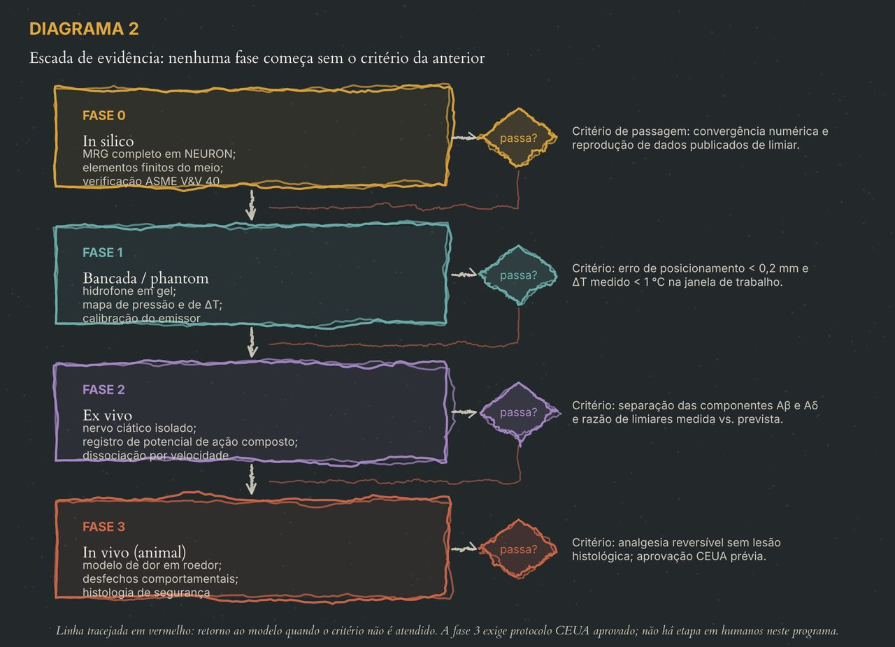
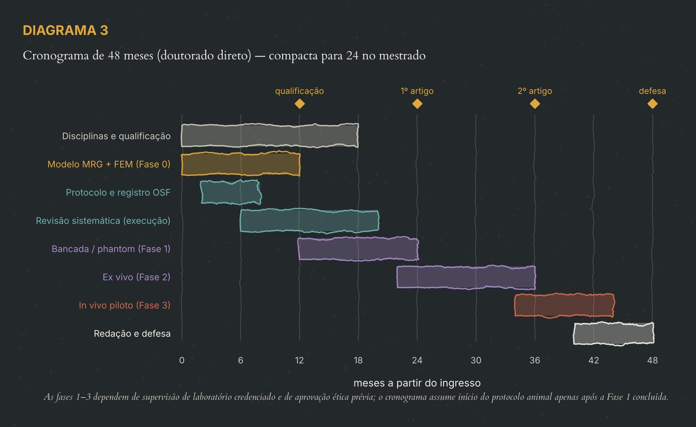

Por que o estímulo chega ao tato antes da dor?
Um programa de investigação sobre resolução de fibra única e limiares de segurança tecidual, e o que seria preciso para inverter essa ordem sem atravessar as fronteiras de segurança do tecido.
A ordem está invertida para quem trata dor
Sob um eletrodo de superfície, o estímulo recruta primeiro as fibras grossas (Aβ, tato) e só depois as finas (Aδ e C, dor). O limiar cai com o calibre: quanto maior o diâmetro, mais longo o internodo e maior a diferença de potencial que o campo impõe entre dois nós de Ranvier.
No diorama, cada estímulo do eletrodo dispara um potencial que salta de nó em nó — mais rápido nas Aβ. Passe o mouse sobre uma fibra para ver calibre e limiar relativo.


Duas réguas: resolução contra penetração
Inverter a ordem exigiria focalizar a energia na escala de um único axônio. Com ultrassom, isso pede comprimento de onda de ≈ 10 µm — cerca de 150 MHz —, frequência em que a atenuação passa de 75 dB por centímetro. O programa mapeia essa fronteira com números, e não com promessas.



O que o modelo nodal prevê
Cadeia de 41 nós de Ranvier com membrana passiva e função de ativação de Rattay; Monte Carlo com 20 000 sorteios e bootstrap de 2 000 reamostragens. Semente fixa: a saída é idêntica a cada execução — e é a mesma que o simulador reproduz no navegador.


Nenhuma fase começa sem o critério da anterior
Do in silico à bancada, ao nervo isolado e ao modelo animal — com critérios de passagem declarados de antemão. Não há etapa em seres humanos em nenhum momento do programa.


—
Marcos
Atualizado em · versão do programa
O diário do programa e do simulador
Programa de pesquisa
Versões do simulador
Explore o simulador ou leia a documentação
Simulador multiescala
Do corpo inteiro com anatomia real à membrana com canais iônicos. Aplique TENS, eletroacupuntura, taVNS ou ultrassom focado, acompanhe o monitor do paciente e veja os pontos reflexos e as estruturas associadas em camadas.
Abrir o simulador →Documentação
Manual do usuário ilustrado, manual técnico do desenvolvimento, página de notícias e eventos, código e o histórico de versões.
Abrir o manual do usuário →